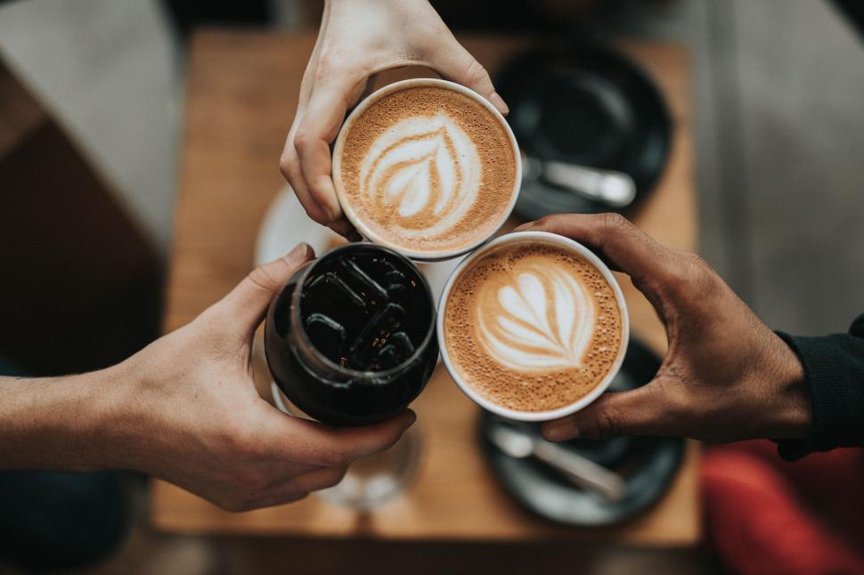

Handcrafted Quality
Every drink is made with care — from our espresso pulls to our freshly baked pastries.

Every drink is made with care — from our espresso pulls to our freshly baked pastries.
We work with nearby roasters and suppliers whenever possible to support our community.

Café Luna is designed as a warm, inclusive environment where all guests feel welcome.
| Mon-Fri | 7:00am - 5:00pm |
|---|---|
| Sat-Sun | 8:00am - 4:00pm |